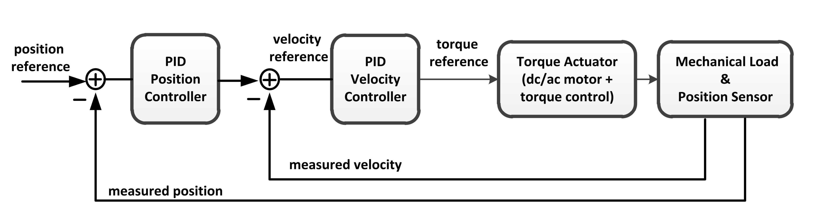

PID Tuning
Tuning a PID Controller appears easy, requiring you to find just three values: Proportional, Integral, and Derivative gains. In fact, safely and systematically finding the set of gains that ensures the best performance of your control system is a complex task.
Traditionally, PID controllers are tuned either manually or using rule/system-based methods (such as WPILib SysId). Manual methods are iterative and time-consuming, and if used on the hardware, can cause damage. Rule/system-based methods also have serious limitations: they do not support certain types of plant models, such as unstable plants, high-order plants, or plants with little or no time delay.
Manual PID Tuning
Plot the position setpoint, velocity setpoint, measured position, and measured velocity on a graph. In general, increase kP until the position tracks well, then increase kD until the velocity tracks well.
Note
The velocity setpoint can be obtained via numerical differentiation of the position setpoint (i.e., v_{desired,k} = frac{r_k - r_{k-1}}{Delta t}).
Position PID Tuning
CTRE recommends the following steps to manually a position PID Controller:
Set all gains to zero.
Determine if the PID control is for an Elevator or an Arm. If so, then determine kG: * Elevator - To find Kg, determine the output necessary to hold the elevator at a constant height in open-loop control. * Arm - To find Kg, determine the output necessary to hold the arm horizontally forward.
Select the appropriate Static Feedforward Sign for your closed-loop type. (See Static Feed Forward section below)
Increase kS until just before the motor moves.
Increase kP until the output starts to oscillate around the setpoint. (Rule-of-thumb is start at a value of 1.0 and double it in each test until oscillation occurs)
Increase kD as much as possible without introducing jittering to the response.
Important
Since the arm kG uses the angle of the arm relative to horizontal, the Talon FX often requires an absolute sensor whose position is 1:1 with the arm, and the sensor offset and ratios MUST be configured. When using an absolute sensor, such as a CANcoder, the sensor offset must be configured such that a position of 0 represents the arm being held horizontally forward. From there, the RotorToSensor ratio must be configured to the ratio between the absolute sensor and the Talon FX rotor.
Important
Adding an integral gain to the controller is an incorrect way to eliminate steady-state error. A better approach would be to tune it with an integrator added to the plant, but this requires a model. Since we are doing output-based rather than model-based control, our only option is to add an integrator to the controller.
Velocity PID Tuning
CTRE recommends the following steps for manually tuning a Velocity PID Controller:
Set all gains to zero.
Select the appropriate Static Feedforward Sign for your closed-loop type. (See Static Feed Forward section below)
Increase kS until just before the motor moves.
Increase kV until the output velocity closely matches the velocity setpoints.
Increase kP until the output starts to oscillate around the setpoint.
Note
Velocity PID controllers typically don’t need K_d.
Important
Adding an integral gain to the controller is an incorrect way to eliminate steady-state error. A better approach would be to tune it with an integrator added to the plant, but this requires a model. Since we are doing output-based rather than model-based control, our only option is to add an integrator to the controller.
Static Feedforward Sign
The static feedforward kS is the output needed to overcome the system’s static friction, in units of the control output type. Because friction always opposes the direction of motion, the sign of kS also depends on the direction of motion. Phoenix 6 provides two possible methods of determining this signage using the StaticFeedforwardSign config in the gain slots.
Velocity Sign
This method is used for Velocity PID Controllers. By default, the signage of kS is determined by the signage of the velocity setpoint. In other words, if the velocity setpoint is positive, then the output of kS is positive; if the velocity setpoint is negative, then kS is negative. This option is always used when running velocity closed loops, and it is recommended for Motion Magic controls and motion-profiled position closed loops.
Closed-Loop Sign
This method is used for a Position PID Controller. Signage of kS can be determined by the sign of the closed-loop error. For example, if the position error (target - measured) is positive, then the output of kS is positive; if the error is negative, then kS is negative. This option is typically used when a velocity setpoint is otherwise not available, such as when running unprofiled position closed loops.
CTRE Torque PID Tuning Guide
The following sections were directly copied from a CTRE document authored by Cory of CTRE. They are not (yet) generally available as part of thier documentation. I have copied them here in case the link is removed from the website. The complete original document can be found using the link in the References section.
How to Manually Tune your PID Loops
Authored by Cory
There’s plenty of tools available now that allow users to characterize their mechanism and find the ideal gains, however sometimes it’s faster and easier to manually tune a mechanism. This guide covers how to tune the more popular Phoenix 6 PID loops manually.
General Information
Every closed loop controller has the following aspects consistent:
- Gains are canonical
kP = motor_output / error. The amount of output to apply per unit of error in the system.
kI = motor_output / error-second. The amount of output to apply per unit of error for every second of that error.
kD = motor_output / (error / second) = motor-output x second / error. The amount of output to apply per change in error over time.
kS = motor_output. A static or constant amount of output to apply typically used to overcome friction.
- kG = The amount of output to apply to counteract the force of gravity.
if mechanism is arm; kG = motor_output / cos(angle)
if mechanism is elevator; kG = motor_output
- kV = motor_output / velocity. The amount of output to apply per target velocity.
In Voltage control modes this is a feed forward to counteract the back-emf of the motor.
In Current control modes this is a feed forward to counteract the force of drag on the system.
kA = motor_output / acceleration. The amount of output to apply per target acceleration. This is used to account for the inertia of a system.
Motor output is dependent on control type
Duty Cycle uses percent of supply voltage:
Voltage uses motor output voltage:
Torque Current uses stator amps:
Everything operates in Mechanism units
This generally multiplies the gains by the gear ratio
A 100:1 reduction means a kP = 1 is 1 Volt output at 1 rotation error at the mechanism, or 1 Volt output at 100 rotations error at the motor.
This leads to the first major aspect of manual PID tuning - finding a good start. Since every gain is canonical, you can back-calculate what value the gain should start at based on the error you see and the desired motor voltage. Say I have an arm mechanism that is currently 0.1 rotations away from where I want it to be. I know that applying 1 volt of output is enough to move it, so at 0.1 rotation error I should apply 1 Volt to slowly bring it to the setpoint. That means my kP is Volts / error = 1 / .01 = 10. This is a good starting point for my mechanism and I can see a safe response that matches what I would do manually.
Similar math can be done for every other gain constant to find a good starting point.
Specific Response Tuning
These general guidelines are great for understanding what’s happening in a closed loop controller and how to forward-calculate what a reasonable starting point is. However, the specific mechanism you’re tuning is going to affect how to find the ideal gains and what gains you should be using in the first place.
Flywheel Tuning with TorqueCurrentFOC
Below is a list of steps and a simulator that provides the opportunity to try tuning a flywheel system using PID with TorqueControl. The Red line is the setpoint of the flywheel controller, purple is the current velocity, and the green line is the current of the motor in stator-amps.
This particular flywheel has a maximum velocity of 100 rps.
- Tuning a flywheel is largely done with the following steps:
Zero all PID gains.
Set a high setpoint (typically 8/10th the maximum velocity).
Increase kS until the wheel starts moving, then back off to just before that movement.
Set kP to a very low number (typically 10 / setpoint is a good starting point).
Adjust kV until flywheel achieves setpoint.
Set a low setpoint (1/10th of the maximum velocity).
Adjust kS until flywheel achieves setpoint.
Set back to the high setpoint.
Repeat steps 5-8 until the gains do not change.
Increase kP until the flywheel oscillates, then back off to just before that oscillation.
Verify gains hold for expected velocities.
The ‘Why’ for each step:
We start with PID gains at 0 to isolate as many of the forces in play as possible, and iteratively get closer to the “ideal” gains.
There needs to be a setpoint for the parameters to take affect, and a higher setpoint sets up the following steps.
The kS gain is meant to reduce the effect of friction without it moving the mechanism on its own, so getting it as close to breaking friction without it actually breaking friction is ideal. However, this step alone only accounts for static friction which isn’t ideal in a flywheel, where it’ll typically be experiencing rolling friction. This is managed in a later step.
A low kP will magnify the requirement for a good kS and kV. If this gain is too high it’ll mask a “bad” kS and kV during the kS/kV tuning.
When the setpoint is high, the kV will dwarf the kS term in its effectiveness, so the kV term should be prioritized to achieve the setpoint.
Setting a low setpoint will prioritize the kS term during its tuning phase.
With the low setpoint, the kS term will dwarf the kV term and correctly account for rolling friction.
Going back to a high setpoint verifies the kV term is still correct.
Typically, after reducing kS the system won’t achieve its high setpoint, so the kV term needs to increase. Similarly, increasing kV may cause the system to overshoot the low setpoint, requiring the kS to lower. This procedure continues until the kS/kV gains stabilize and stop changing, indicating the feed forwards are correct.
With proper kS/kV terms, the kP can be increased to quickly achieve the setpoint. The system wants as high a kP gain as possible to decrease the time taken to get to the setpoint. The limit of how high the kP term can be is determined by the system latency, at which point the oscillation is impossible to avoid. The goal of repeating steps 5-8 is to find that limit.
Always verify the gains work for the setpoints you expect the system to be commanded, as it’s possible the generic gains may not work under the operating range of the system. If that’s the case, adjust the setpoints to be within the expected operating range and re-tune with them.
Tuning process Example
Following the guide, I start with all gains set to 0, set a setpoint of 80 (100 rps maximum), and begin with playing with the kS parameter.
Setting kS to 1 doesn’t start spinning the wheel, so I double it to 2, which remains still. Doubling it to 4 still doesn’t move, so I up it to 8 where it does start moving. Going back to 6 stops the wheel, and so does 7, so I leave the kS at 7 and move on to the next step.
I set the kP to 10/10 = 1 (1 amp output per rps error), and notice that the wheel starts moving up to the setpoint, but can’t quite reach it. It stalls out at 65-70 rps. This means the drag is significant and preventing us from reaching the setpoint, necessitating a kV.
Now I set kV to 1, and notice that it significantly overshoots. I halve it to 0.5, 0.25, then 0.125 before I notice it just barely passes the target, so I leave it at 0.125 and move on to the low setpoint.
Then, I set the setpoint to 10, and notice that I’m overshooting. This means I need to decrease the kS gain.
I try 4 from before again, and notice that it overshoots. So I bring it down to 3 and see it’s pretty much perfect.
Going back to 80 rps, I’m now undershooting, so I increase kV to 0.13, then 0.14 before I’m happy with it.
Back down to 10 rps, I’m overshooting again, so I bring kS down to 2 and see it undershoot. I take the halfway point and make it 2.5, then 2.6 before I’m happy with it reaching the target.
Again up at 80 rps I’m generally happy with how close it’s reaching the target, so I move on to increasing kP.
I first double kP to 2, then 4, 8, and 16, noticing that the time to target is decreasing with a larger kP. A kP of 16 results in a bit of overshoot that I don’t like, so I decrease it to 12, then 10 before it matches what I want. I increase to 11 and still like the response, so I leave it at 11.
And that’s the flywheel tuned! This took 2 iterations of going between low setpoint and high setpoint, but sometimes you may need more depending on how difficult your system’s dynamics are and if you need tighter tolerances. In this case I’m eyeballing the response and saying it’s good enough, but in practice you should use the closed loop error Status Signal to verify the error is within the tolerance of your mechanism.
Important
You can find the simulator in the original document at the url link in the references section.
Turret Tuning with TorqueCurrentFOC
Tuning a Turret is identical to any other position controller that has no gravity component.
One key thing to note with any position-based torque controller is the reliance on the kD term. When tuning a position controller with voltage, it’s often enough to rely on the natural dampening of the system to dampen the response, negating some of the need for kD. However when using torque as the control type, most of that natural dampening is gone, so kD is necessary for the system to stop itself in any reasonable amount of time.
Similarly to the velocity controller, below is a list of steps and simulator for turret tuning. Red is the setpoint in rotations, purple is the current position, green is the stator current in amps.
- The following steps cover the general idea:
Zero all PID gains.
Set a setpoint relatively nearby (typically 0.1 mechanism rotations).
Increase kS until the turret starts moving, then back off to just before that movement.
Increase kP until you notice significant overshoot.
Increase kD until the overshoot stops happening.
Repeat steps 4 and 5 until increasing kD results in more oscillation, or until the system oscillates on its way to the setpoint. If oscillation on the way to setpoint is seen, decrease kD until it stops. If overshoot in general is happening and kD is already at max, reduce kP until it stops.
Verify gains work for other setpoints as well. Tune kP/kD as appropriate for most general cases.
Note
Values of kP=200, kD=15 demonstrate the “oscillates on its way to the setpoint” case for setpoints within 1 rotation.
The ‘Why’ for each step:
We start with PID gains at 0 to isolate as many of the forces in play as possible, and iteratively get closer to the “ideal” gains.
A nearby setpoint ensures the system response should be relatively small to start with when tuning.
The kS gain is meant to reduce the effect of friction, so the largest possible value that still prevents the system from moving will reduce the effect of friction in general.
The kP gain will control how quickly the system gets to the setpoint, however in TorqueCurrentFOC modes there is no natural dampening force, so overshoot is expected at the beginning. Once that happens kD should be tuned.
The kD gain will effectively slow down the system as it reaches the setpoint, increasing it will increase the force slowing it down, so it should be increased until the system no longer overshoots.
In general, the system wants as high a kP gain as possible to decrease the time taken to get to the setpoint. This also requires a high kD gain to properly dampen the system. The limit of how high the kP/kD term can be is determined by the system latency, at which point the oscillation is impossible to avoid. The goal of repeating steps 4 and 5 is to find that limit.
Always verify the gains work for the expected setpoints of the system, it’s possible the general solution may not work under the expected operating range of the system. If that’s the case, re-tune for the expected operating range using the generic gains as a basis.
Tuning Process Example
Following the guide, I start with all gains at 0 and set a setpoint of 0.1 rotations.
I start with a kS of 1 amp and notice it moves, so I cut it in half to 0.5, 0.25, 0.125 until it stops. Increasing to 0.13 gets the turret moving again, so I leave it at 0.125 amps.
I then set a kP of 1, and see significant overshoot, so I add a kD of 1. This is very overdamped system, but that’s fine, as I’ll start increasing kP again.
I double kP to 2 and see no overshoot. Double again to 4, and I see a little overshoot. Double again to 8 and I see significant overshoot, indicating I should increase kD again. I double it to 2 and the overshoot becomes minimal, but then I double it again to 4 before it becomes significantly overdamped again.
Doubling kP again to 16 still looks fine, to 32 is still fine, 64 finally has significant overshoot. I double kD to 8 and that overshoot is gone.
So I double kP again to 128, then to 256 where I notice it oscillates a bit. I try to stop this oscillation by increasing kD to 16, then to 32 where I notice it’s always oscillating. This means I’ve reached the limit of the system, and need to back off on gains a bit.
I reduce kD back to 16 where I notice a bit of oscillation on its way to the setpoint, and start dialing back kP. I start with a kP of 200, where it’s overdamped and oscillating on its way to the setpoint. So I reduce kD to 12.
From here I continue to reduce kP to 180, then 150 where I notice the oscillation on its way to the setpoint again. Reduce kD again to 10, and decrease kP to 140, then 130 where I see oscillation on its way to setpoint again.
Reduce kD even more to 9, and the system response looks relatively good at this point. Now it’s time to play with different setpoint. Any setpoint within 1 rotation looks good, which is appropriate for a turret. However, let’s say I’m not tuning a turret anymore, but some other position controller where a setpoint of, say, 20 is appropriate. When I set a setpoint of 20, I notice significant overshoot that I should correct in PID.
At this point, I know that my kD can’t go much higher otherwise I have oscillation on my way to the setpoint at smaller setpoints. So I try to stop the oscillation only with kP. Reducing it to 120, 110, 100, then finally 90 before the overshoot stops. I check back with my 0.1 setpoint to make sure it’s still good, but now it looks overdamped.
So I reduce kD to 8, and it looks good. Back to a setpoint of 20, I have a bit of overshoot, so I reduce kP to 80 which looks good. Back to setpoint of 0.1, I have a bit of overdamped behavior, so I increase kP up to 85. Setpoint of 20 still has a bit of overshoot, so I bring kD up to 8.5 which looks good.
Back to a setpoint of 0.1 and I still have some underdamped behavior, but it’s minimal at this point and what I’d consider acceptable.
If my system normally expects setpoints within 1 rotation of my current position, then I’d prioritize the within-1-rotation situation for my PID controller, however if my system normally expects setpoints closer to 20 rotations away from current position then I’d prioritize that situation. If I really needed both close and far away behavior, then I’d look at gain-scheduling based on the value of the error, using both Slots 0 and 1, with 0 for the within-1-rotation situation, and 1 for the outside-1-rotation situation.
Arm Tuning with TorqueCurrentFOC
Tuning an Arm is very similar to tuning a turret, just with the addition of needing to account for gravity. As such, the process is nearly identical, except for a small section dedicated to dialing in the kG term.
- The steps:
Zero all PID gains.
Increase kG and find the smallest possible kG that stops the arm from moving.
Increase kG and find the largest possible kG that stops the arm from moving.
Set kG to the middle of the two.
Set a setpoint relatively nearby (typically 0.1 mechanism rotations).
Increase kS until the arm starts moving, then back off to just before that movement.
Increase kP until you notice significant overshoot.
Increase kD until the overshoot stops happening.
Repeat steps 7 and 8 until increasing kD results in more oscillation, or until the system oscillates on its way to the setpoint. If oscillation on the way to setpoint is seen, decrease kD until it stops. If overshoot in general is happening and kD is already at max, reduce kP until it stops.
Verify gains work for other setpoints as well. Tune kP/kD as appropriate for most general cases.
The ‘Why’ for each step:
We start with PID gains at 0 to isolate as many of the forces in play as possible, and iteratively get closer to the “ideal” gains.
The kG gain is meant to counteract the force of gravity, however the force of friction is also at play in an arm. The lowest possible kG that prevents the system from moving is the lower bound of the gravity and friction component.
The highest possible kG that prevents the system from moving is the upper bound of the gravity and friction component.
Setting kG to the middle point of the lower and upper bounds is a good approximation for the true effect of gravity, removing the force of friction.
A nearby setpoint ensures the system response should be relatively small to start with when tuning.
The kS gain is meant to reduce the effect of friction, so the largest possible value that still prevents the system from moving will reduce the effect of friction in general.
The kP gain will control how quickly the system gets to the setpoint, however in TorqueCurrentFOC modes there is no natural dampening force, so overshoot is expected at the beginning. Once that happens kD should be tuned.
The kD gain will effectively slow down the system as it reaches the setpoint, increasing it will increase the force slowing it down, so it should be increased until the system no longer overshoots.
In general, the system wants as high a kP gain as possible to decrease the time taken to get to the setpoint. This also requires a high kD gain to properly dampen the system. The limit of how high the kP/kD term can be is determined by the system latency, at which point the oscillation is impossible to avoid. The goal of repeating steps 7 and 8 is to find that limit.
Always verify the gains work for the expected setpoints of the system, it’s possible the general solution may not work under the expected operating range of the system. If that’s the case, re-tune for the expected operating range using the generic gains as a basis.
Tuning Process Example
Following the guide, I start with all gains at 0 to dial in kG.
I start with a kG of 1, and notice that the arm’s still falling, so I increase it to 2, 4, 8, and 16 before it stops moving. From there I reduce it to 12, then 10 and notice it fall again. I bring it up to 11 and see it still falls appreciably, so I leave it at 12 for the lower bound.
Going back up, I start at 16 again, then to 18, and 20 before it moves its way up. 19 also produces appreciable movement, so I leave it at 18. This means my kG is (12 + 18) / 2 = 15 amps.
From here, I set a setpoint of 0.1 and dial in kS to just before it starts moving. I increase it to 1, 2, and 4 when it starts moving.
From here, I dial it down to 3 where it doesn’t move, and back up to 3.5, 3.7 where it moves again. I check 3.6 and see it doesn’t move, so I leave kS at 3.6 amps.
Now it’s time for kP/kD tuning. I bring kP up to 1, 2, 4, 8, 16, and 32 before I get significant overshoot, where I dial kD in to 1, 2, 4, and 8 before that overshoot is gone. kP keeps increasing to 64 and 128, then kD goes up to 16 and 32 before it’s back to kP. I go up to 256 and 512 where I notice a bit of oscillation, and I may be near the limit at this point. kD increases to 64 and I get oscillation on the way to the target, so I bring it down to 50 then 40 before I’m happy with it. There’s still a little oscillation at the target, but it’s minimal.
I check with other setpoints of -0.1, 0.4, 0.6 and confirm the movement looks good, and say the PID tuning is done.
Profiled Tuning
Note
A profiled PID controller is a specialized type of PID controller that incorporates a trajectory profile, allowing for smoother control of systems by managing both position and velocity.
Profiled tuning can be treated much the same way as tuning a normal PID, but the introduction of a profile means much of the response can be calculated in advance with feed-forwards. This results in most of the work being done due to feed forward, and the feedback gains being used to account for any error in the system.
In Phoenix 6, you can either generate your own profile and feed in the position and velocity setpoints, or use MotionMagic® and let the Talon generate the profile for you. In either case the Talon will have Velocity and/or Acceleration setpoints that it can use the kV and kA feedforward terms on, for more accurate profile following.
The example below uses a pre-generated profile for the system to follow, and the general steps to tune it are below: Zero all PID gains.
Set a setpoint relatively nearby (typically 0.1 mechanism rotations). This isn’t relevant for the simulation, as the setpoint is determined by the pre-generated profile.
Increase kS until the system starts moving, then back off to just before that movement.
Increase kA until the measured position matches the profiled position at the beginning.
Increase kV until the measured position matches the profiled position at the end.
Increase kP until you notice significant overshoot or oscillation (even during motion at cruise velocity).
Increase kD until the overshoot/oscillation stops happening.
Repeat steps 6 and 7 until increasing kD results in more oscillation, or until the system oscillates on its way to the setpoint. If oscillation on the way to setpoint is seen, decrease kD until it stops. If overshoot in general is happening and kD is already at max, reduce kP until it stops.
The ‘Why’ for each step:
We start with PID gains at 0 to isolate as many of the forces in play as possible, and iteratively get closer to the “ideal” gains.
A nearby setpoint ensures the system response should be relatively small to start with when tuning.
The kS gain is meant to reduce the effect of friction, so the largest possible value that still prevents the system from moving will reduce the effect of friction in general.
The kA gain effectively accounts for the inertia of the system. Since torqueCurrent is proportional to the torque applied at the rotor, kA is the coefficient used to scale the amperes applied to an acceleration the system will see. It is the backbone of the profile and doing most of the heavy lifting.
The kV gain controls the compensation due to drag in the system. If the mechanism sees a lot of drag, the end position will be far away, despite it tracking well at the beginning, so tuning kV to account for the drag compensates in that manner.
With the feed forwards taken care of, the feedback tuning comes into play, with kP being used to control how strongly the system minimizes error. However, in TorqueCurrentFOC modes there is no natural dampening force, so overshoot is expected at the beginning. Once that happens kD should be tuned.
The kD gain will effectively act as a kP on velocity, increasing it will increase the force bringing the system to the target velocity, so it should be increased until the system no longer oscillates.
Steps 6 and 7 are repeated until the gains reach the maximum they can be, indicating they’re optimal for the system. These gains probably will not work in normal position closed loops, because it relies on a significant amount of feedforward to naturally dampen the system as physics would expect.
Tuning Process Example
Following the guide, I have set all gains to 0.
I start with kS and set it to 1, and notice it doesn’t move, increase it to 2, then 4 before it starts moving. Back off to 3, and 2.5 until it stops. I nudge it up to 2.6 and see it’s still moving, so I move it back down to 2.5 and leave it there.
Moving on to kA, I start with a kA of 1, and the system doesn’t reach the necessary acceleration or velocity at all, so I increase it to 2, then 4, and 8, and 16 before I se it finally overshoot. I then start reducing kA to 12 and 10, then back up to 10.5 where I’m pretty much at the right acceleration.
I then start increasing kV to account for the friction due to drag. Starting with 1 creates a lot of overshoot, so I reduce it to 0.1 and still see some overshoot. Down to 0.05 and it’s close, but still gaining a bit at the end. Finally 0.03 produces a good response to account for drag.
So now it’s time to tune P. I start with a kP of 1, and notice there’s barely a response. Increasing kP to 10 has a noticeable change, but it’s still far too weak. Going up to 100 creates a noticeable oscillation, so kD should be increased to dampen it.
Starting with a kD of 1, the oscillation is still present, so it increases to 10 where there’s an impact but it’s not enough. Doubling at this point to 20 looks much better, but it also looks like it can be further improved, so it doubles again to 40 where it looks sufficient to move back to kP.
Since kP is already at 100, we’ll double to 200, then 400, then 800 before the oscillation at ~2 seconds appears significant. The end point looks good, though, so there’s no more need to increase kP, as long as we can remove the oscillation with kD.
So kD increases to 80, then 160, then 320. At 320 the profile looks to have hardly any overshoot or oscillation at all, and the end position is right on top of the target, so it looks sufficient for this mechanism.
Note
End of CTRE Document
Cascading Controllers - Position Control
As shown in Image 1, the cascaded structure is basically made of two controlling loops. The inner controlling loop is responsible for controlling the velocity while the outer controlling loop is responsible for controlling the position.

Tuning Steps
For tuning the cascaded structure, we should first focus on the inner (velocity) loop. As it is the inner controlling loop, it should be faster than the outer position loop. However, if all parameters of the outer position controller are set to 0, the inner loop will be disconnected from the user position commands. As a result, we can increase the kP of both position and velocity controllers with a ratio of 10 (kP_velocity = 10 * kP_position). Once the real position started to follow the reference position, we can stop increasing the kP_position, and only focus on increasing kP_velocity. At this stage, we can increase (sharpen) the velocity controller as much as possible. As a rule of thumb, increase kP_velocity until you get close to the instability margin (at this margin, you will feel a vibration effect and some acoustic noise which is caused by controller sharpness). Now, you can reduce kP_velocity to 90% of its value to increase the stability margin, and remove vibration noise.
Once the velocity controller (the inner controlling loop) is tuned, it is time to tune the position controller (the outer controlling loop). To tune the position controller loop, we should start with the P part of its PID controller. Increase kP_position until the entire position control gets close to instability margin. At this state, you will feel a vibration (or acoustic noise) which is because of too sharpened position control. At this step, reduce kP_position to its 90% to increase the stability margin and remove the vibration/ acoustic noise.
So far, the proportional parts of both inner velocity loop and outer position loop are tuned, and we can focus on integrator part of the outer position or inner velocity loop (depends on chosen structure of controller). Increasing the integrator constant will remove the steady state error, but at the same time, it adds some overshoot at step responses. As a rule of thumb, you can increase kI step by step until the following two conditions are met at the same time:
the steady-state error is eliminated in a short enough period of time
the overshoot is in its acceptable range
In the following section, the explained tuning concept is divided in separate systematic steps.
Set the PID constants of both controllers equal to 0. By default, the integral limit of the velocity controller should be set to motor maximum torque in [mNm], and the integral limit of position controller should be set to motor maximum velocity in [rpm].
In this step, the kP constant of the velocity controller should be tuned. Increase the kP of both position and velocity controllers with a ratio of 10 (kP_velocity = 10 * kP_position). Once the real position starts to follow the reference position, stop increasing the kP_position and only focus on increasing the kP_velocity. Increase (sharpen) the velocity controller as much as possible. As a rule of thumb, increase kP_velocity until you get close to the instability margin (at this margin, you will feel a vibration effect and some acoustic noise which is because of controller sharpness). Now, you can reduce kP_velocity to 90% of its value to increase the stability margin, and remove vibration noise.
Now that the velocity controller is tuned, it is time to tune the parameters of the PID position controller. Start with kP_position, and increase it until you again get close to the instability margin, and then reduce kP_position to its 90%. So far, the proportional parts of both inner velocity loop and outer position loop are tuned.
In this step, increase kI to eliminate the steady state error. As a suggestion start with kI equal to 0.01, and in each step, increase it with a factor of 2. Increase kI step by step until the following two conditions are met at the same time: - the overshoot is in its acceptable range - the steady-state error is eliminated in a short enough period of time
Lab - Manual PID Tuning
- Manual PID Tuning - PID Tuning Simulator
- Position PID
Enter your PID values
Click the Test Sequence button. This will run a series of 6 seperate tests
You goal is to get green on both the Setpoint Reached and Setpoint Stabilized indicators
You can change the PID values and try again once the 6 tests are completed. (The PID values will become editable oncethe tests are complete)
Look at the Overshoot and stablization values. You should set PID values that hit stablization as fast as possible and overshoot as little as possible.
- Velocity PID
Move the example Presets slider 1 notch to Week3_assignment_2_part2-flywheel
Enter your PID values
Click the Test Sequence button. This will run a series of 6 seperate tests
You goal is to get green on both the Setpoint Reached and Setpoint Stabilized indicators
You can change the PID values and try again once the 6 tests are completed. (The PID values will become editable oncethe tests are complete)
Look at the Overshoot and stablization values. You should set PID values that hit stablization as fast as possible and overshoot as little as possible.
- Friction
Move the example Presets slider 1 notch to pid_lecture_example_2-friction
Enter your PID values
Click the Test Sequence button. This will run a series of 6 seperate tests
You goal is to get green on both the Setpoint Reached and Setpoint Stabilized indicators
You can change the PID values and try again once the 6 tests are completed. (The PID values will become editable oncethe tests are complete)
Look at the Overshoot and stablization values. You should set PID values that hit stablization as fast as possible and overshoot as little as possible.
- Torque Control PID Tuning - How to manually tune your PID Loops
- Position PID
Proceed to Flywheel Tuning with Torque FOC
Using the steps outlined above tune the Shooter Wheel to the correct PID gains
- Velocity PID
Proceed to Turret Tuning with TorqueFOC
Using the steps outlined above tune the Turret to the correct PID gains
References
CTRE Documentation - How to manually tune your PID Loops